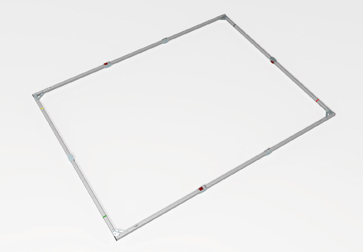

どの席から見る？
客席の広さ、最後列までの距離、表示する文字の大きさを共有。
その他の表示機材 ↗EQUIPMENT / 52
組立式投写スクリーン
会場に合わせて、映像を受ける面をつくる。
KEY SPECIFICATIONS

画像を大きく見る ＋01 / ROLE & FLOW
実際の配線・端子構成は案件に合わせて決めます。
02 / BEFORE YOUR BRIEF
客席の広さ、最後列までの距離、表示する文字の大きさを共有。
プロジェクターを置く側に合わせて幕を選定。背面投写ではスクリーン裏の投写空間も確認。
天井高、画面下端、脚を置く範囲、搬入経路と設置条件を確認。
03 / CHOOSING THE RIGHT TOOL
会議・発表会などで、持ち込むプロジェクターに合わせて投写面を用意したいときに。客席からの見やすさと、画面の前後に確保できる空間から構成を検討します。
屋内用です。前面用の幕でそのまま背面投写ができるという意味ではありません。必要な明るさや投写距離はプロジェクター・レンズ・会場照明にも左右されます。設置はメーカー手順と会場条件の確認が必要です。
写真はMonoClip32のフレーム部分です。投写幕・脚・補助部材を含む完成状態や、提供するセット内容を示すものではありません。使用サイズ、幕の種類、脚の型式と付属範囲は手配時に確認します。MonoClip64やMonobloxを同じ機材として扱いません。
参考資料：メーカー公式仕様 ↗（2026年11月3日照合）
会場・客席配置、画面位置と希望サイズ、天井高、前面／背面投写、幕の種類、プロジェクターとレンズ、脚・補助部材、設置と搬入の条件をお聞かせください。本体・周辺機材・搬入出・設営・本番操作・撤去を分けて、必要な範囲を整理します。セットの付属品や人員が自動で含まれる表示ではありません。
04 / RELATED EQUIPMENT
投写距離・明るさ・画面サイズは、使用するプロジェクターとレンズを含めて検討します。